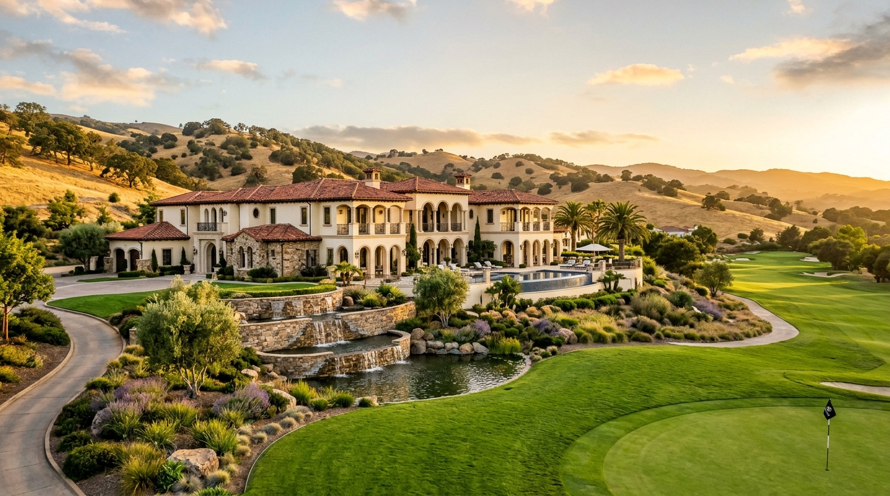

Find your corner of Danville & Alamo

Blackhawk Country Club →
Internationally recognized luxury golf community with two 18-hole championship courses, tennis complex, sports center, and lavish foothill estates.

Westside Danville →
Coveted for its tree-lined privacy, sprawling half-acre properties, and private path access directly to downtown Hartz Avenue boutiques and coffee shops.

Alamo Oaks & Westside Alamo →
Unincorporated enclave of bespoke multi-acre estates, heritage oak groves, and equestrian facilities offering unmatched privacy and Diablo vistas.

Roundhill Country Club →
Alamo's premier club neighborhood featuring custom homes surrounding tennis courts, swimming facilities, and scenic fairways.

Greenbrook & Sycamore →
Master-planned family favorites featuring community clubhouses, pools, greenbelts, and immediate proximity to Charlotte Wood and Sycamore Valley.

Diablo Country Club →
Historic landmark neighborhood with iconic California architecture, mature redwoods, and the venerable Diablo Country Club established in 1914.

Magee Ranch & Hidden Oaks →
Exclusive gated community set against Mount Diablo foothill open space, offering custom estates on half-acre to one-acre manicured parcels.

Stone Valley & Bryan Meadow →
Picturesque Alamo corridor boasting sprawling equestrian properties, private gated driveways, mature walnut orchards, and serene country living.

Bettencourt Ranch →
Prestige 24-hour guarded community featuring executive homes, tennis courts, recreation clubhouse, and elevated views across the Tassajara Valley.